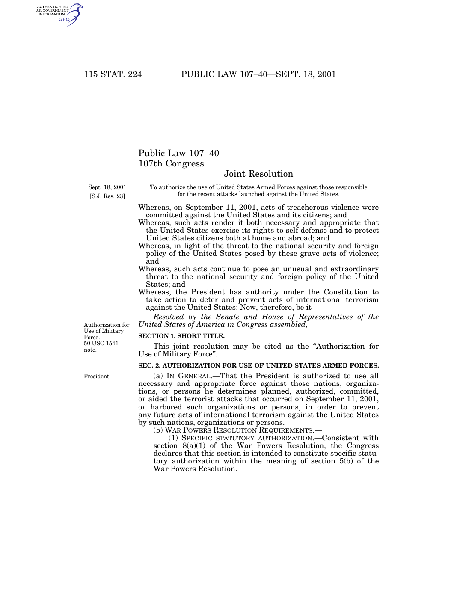

U.S. FOREIGN POLICY / WEEK 14
September 11, war, and the search for a new balance
- 2001–2016
- Dr. Murat Toman
U.S. FOREIGN POLICY / WEEK 14
The main idea
- The September 11 attacks changed security priorities and expanded government powers. Afghanistan, Iraq, and later diplomacy raised different questions about force, political goals, rights, and costs.
- Institutions, expectations, and ongoing commitments can make policy difficult to change. Leaders inherit costs and relationships rather than starting from nothing. To evaluate adjustment, specify what the government aimed to change and what remained. Include civilian effects, legitimacy, and long-term obligations in the assessment.
U.S. FOREIGN POLICY / WEEK 14
Where this week fits in history
| When | Selected event |
|---|---|
| 1991 | Gulf War and dissolution of the Soviet Union |
| 2001 | September 11 attacks and authorization for force |
| 2015 | Iran nuclear agreement announcement |
| 2025 | November National Security Strategy: contemporary primary-source comparison |
U.S. FOREIGN POLICY / WEEK 14
History through a source

- This document is evidence of an official statement or decision. Its wording and appearance help us identify the source, but its promises still need to be checked against evidence of actions and results.
- Use the linked transcription or PDF to read the text. Ask who issued it, what it claims, and whose viewpoint is missing.
U.S. FOREIGN POLICY / WEEK 14
Key words explained
- Counterterrorism: Efforts to prevent, disrupt, or respond to terrorism.
- Regime change: The removal or replacement of a governing regime.
U.S. FOREIGN POLICY / WEEK 14
Key words explained
- State-building: Efforts to establish or strengthen institutions that govern and provide public authority.
- Sanctions: Restrictions intended to influence behavior by imposing economic or other costs.
U.S. FOREIGN POLICY / WEEK 14
September 11 changed how leaders understood danger
- The attacks showed serious vulnerabilities despite U.S. military strength. Intelligence, coordination, and the ability to understand threats became central concerns.
- A government’s account of danger influences which actions appear urgent or acceptable. Threat judgments still require evidence and scrutiny.
U.S. FOREIGN POLICY / WEEK 14
Emergency authority could outlast the original decision
- The 2001 authorization permitted force against actors connected to the September 11 attacks and those who harbored them. Its later use raises questions about scope and oversight.
- A decision made in an emergency can shape policy for many years. Legal permission and strategic wisdom remain separate questions.
U.S. FOREIGN POLICY / WEEK 14
Afghanistan and Iraq require separate explanations
- The wars had different contexts, adversaries, and rationales. Counterterrorism seeks to disrupt threats, regime change seeks to remove a government, and state-building seeks to establish functioning institutions.
- These goals require different tools and evidence of success. Combining them does not make their requirements disappear.
U.S. FOREIGN POLICY / WEEK 14
Negotiation and pressure could work together
- The Obama administration faced inherited wars and sought to adjust priorities. The Iran case illustrates how sanctions and negotiations could operate within one policy.
- Sanctions work through economic costs rather than attraction. Diplomacy is a method of bargaining, whose results must be assessed through commitments and implementation.
U.S. FOREIGN POLICY / WEEK 14
Earlier choices constrained later choices
- Institutions, expectations, and ongoing commitments can make policy difficult to change. Leaders inherit costs and relationships rather than starting from nothing.
- To evaluate adjustment, specify what the government aimed to change and what remained. Include civilian effects, legitimacy, and long-term obligations in the assessment.
U.S. FOREIGN POLICY / WEEK 14
Politics at home and abroad
- At home: Fear, emergency powers, civil liberties, oversight, and war fatigue shaped policy.
- Abroad: The United States fought wars, pursued counterterrorism, and tried to adjust regional commitments.
- The connection: domestic support and resources affect what leaders can promise abroad. International events can change domestic priorities.
U.S. FOREIGN POLICY / WEEK 14
How power worked
| Form of influence | How it operated in this week |
|---|---|
| Hard power | Military operations and sanctions applied force or material pressure. |
| Soft power | Cooperation and public engagement could build credibility, but their effects depended on conduct and reception. |
- Sanctions are coercive economic statecraft, not automatically soft power; negotiation may combine coercion with reassurance.
U.S. FOREIGN POLICY / WEEK 14
A worked explanation
- Are counterterrorism, regime change, and state-building the same goal?
- No. They seek different outcomes and require different capabilities. Progress toward one does not automatically achieve the others.
- Why this matters: Institutions, expectations, and ongoing commitments can make policy difficult to change. Leaders inherit costs and relationships rather than starting from nothing. To evaluate adjustment, specify what the government aimed to change and what remained. Include civilian effects, legitimacy, and long-term obligations in the assessment.
U.S. FOREIGN POLICY / WEEK 14
Practice with the documents
- Identify who the 2001 authorization permits action against.
- Identify a promised result in Obama’s 2015 Iran statement.
- For each document, separate the stated goal from the evidence you would need to show that it was achieved.
U.S. FOREIGN POLICY / WEEK 14
How to support an answer
- A claim is what you argue. Evidence is a specific passage, event, or finding that supports it. Explain the connection between them.
- Example structure: “The document claims ____. This suggests ____. It cannot by itself show ____.”
- A speech can establish what a speaker said. Evidence of actions and consequences is needed to judge whether the policy worked.
U.S. FOREIGN POLICY / WEEK 14
What to remember
- Afghanistan and Iraq must be explained separately.
- Counterterrorism, regime change, and state-building require different theories of success.
- Emergency delegations can generate durable institutional effects.
- Sanctions, verification, and reassurance can interact within a negotiated strategy.
U.S. FOREIGN POLICY / WEEK 14
Reading guide
- Authorization for Use of Military Force (2001) A document from the period. Use it to identify what officials claimed or authorized, then check other evidence for the consequences. External source page; access may vary.
- Obama’s Statement on Iran (14 July 2015) A document from the period. Use it to identify what officials claimed or authorized, then check other evidence for the consequences. External source page; access may vary.
Authorization for Use of Military Force (2001) — External source page; access may vary.
Obama’s Statement on Iran (14 July 2015) — External source page; access may vary.
U.S. FOREIGN POLICY / WEEK 14
Reading guide
- The 9/11 Commission Report: Executive Summary (2004) Interpret this source in relation to the weekly objectives and source lab. External source page; access may vary.
- From Colony to Superpower: U.S. Foreign Relations since 1776 A scholarly narrative companion for historical periods. Select the relevant period; no unverified page assignments are supplied. Publisher record; full text may require institutional access.
The 9/11 Commission Report: Executive Summary (2004) — External source page; access may vary.
Read as a commission finding with a defined evidentiary scope, not an account of later wars.
From Colony to Superpower: U.S. Foreign Relations since 1776 — Publisher record; full text may require institutional access.
U.S. FOREIGN POLICY / WEEK 14
Reading guide
- Soft Power A foundational theoretical reading, to be tested against historical cases rather than treated as a universal explanation. JSTOR article; full text may require institutional access.
Soft Power — JSTOR article; full text may require institutional access.
U.S. FOREIGN POLICY / WEEK 14
Video and audio guide
- September 20, 2001: Address on the U.S. Response to the Attacks of September 11 Identify the initial public definition of the enemy and the proposed duration of the response.
- Former National Security Adviser Steve Hadley’s “Hand Off” Use a participant’s retrospective on the Bush-to-Obama transition to assess policy inheritances.
September 20, 2001: Address on the U.S. Response to the Attacks of September 11 — Free provider page; external player may require consent or be region-dependent
Primary-source video, audio and transcript; distinguish claims made in September 2001 from later policy outcomes.
Former National Security Adviser Steve Hadley’s “Hand Off” — Free provider podcast page verified through web retrieval; separate HTTP fetch returned 403. Browser playback not tested.
May 1, 2023; Stephen Hadley with H. Andrew Schwartz; participant perspective rather than independent adjudication.
U.S. FOREIGN POLICY / WEEK 14
Video and audio guide
- The President’s Speech in Cairo: A New Beginning Analyze the relationship between public diplomacy, mutual respect, and policy commitments in Obama’s Cairo address.
- Foreign policy in the Obama era Evaluate a contemporaneous assessment of the Obama administration before the 2016 election.
The President’s Speech in Cairo: A New Beginning — Free provider page; external player may require consent or be region-dependent
June 4, 2009; archived page links MP4, MP3, and transcript; frozen-site warning notes some links may fail.
Foreign policy in the Obama era — Free provider page; external player may require consent or be region-dependent
May 13, 2016; optional interpretation alongside the two primary speeches.
U.S. FOREIGN POLICY / WEEK 14
Using the sources carefully
- Linked readings and media offer particular viewpoints. Compare them with the lesson and other evidence. Some sources require institutional access.
- Media links and descriptions were checked when the course resources were prepared. Full playback was not tested.
- The CSIS Hadley episode’s provider page was verified, but an earlier direct retrieval returned 403. Playback and access may vary.